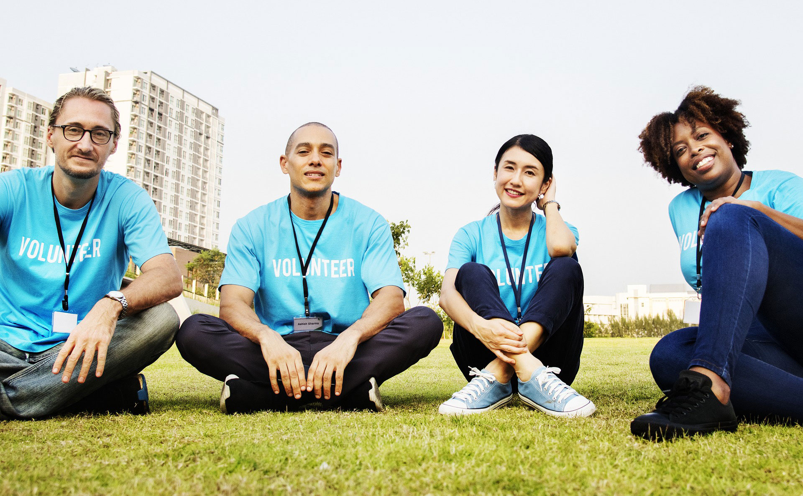

Who Are We?
A journey of resilience, innovation, and impact.

The Beginning
A group of passionate young individuals from diverse backgrounds came together in 2010 to tackle the health coverage crisis they had personally endured.
Their vision? To provide healthcare solutions for workers and self-employed individuals who lacked formal health coverage. And so, Oummal was born – a name reflecting their commitment to laborers and fairness.